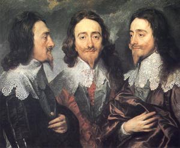

Il processo a Carlo I
pag. 5/5> I rivoluzione Guerra Petizione Putney

Prima udienza
20 gennaio 1649
Mentre veniva letta l'accusa, il prigioniero era rimasto per qualche tempo seduto, guardando a volte la Corte e levando di tanto in tando lo sguardo verso le gallerie e, dopo essersi anche alzato e voltato a guardare la scorta, gli spettatori e auditori, era tornato a sedersi con un contegno superbo e sicuro di sé, testimoniando di non essere per nulla turbato, fino a che non si giunse alle parole che Carlo Stuart era un tiranno, un traditore, ecc., udite le quali egli si mise a ridere in faccia alla Corte. E letta che fu l'accusa, il presidente riprese a parlargli in questa maniera:
Presidente: Signore, avete udito leggere un'altra accusa contro di voi e le cose che vi sono contenute. Avete visto che nella conclusione la Corte è pregata in nome dei Comuni d'Inghilterra di farvi rispondere. Perciò essa aspetterà la vostra proposta e l'ascolterà volentieri.
Al che il Re gli rispose:
Re: Prima che io voglia rispondere, debbo sapere innanzitutto in virtù di quale autorità io sono stato condotto qui. (...) Ricordatevi, signore, che io sono il vostro Re, vale a dire il vostro Re legittimo, e quale peccato state attirando sulle vostre teste, oltre ad altri grandi giudizi sul Paese. Pensateci bene, anzi, prima d'inoltrarvi da un peccato a un altro maggiore. Io non vedo che abbiate alcuna autorità, e pertanto fatemi sapere in virtù di quale autorità legittima io mi trovi qui; allora non ricuserò di rispondere. E allo stesso tempo sappiate che io non voglio abbandonare il diritto che mi è stato affidato in deposito, io ho un deposito che mi è stato commesso da Dio per effetto di un'antica e legittima successione dai miei antenati, io non l'abbandonerò sottomettendomi a rispondere a un'autorità che non sia legittima. Perciò date,mi soddisfazione in questo, e io vi risponderò.
Presidente: Signore, se vi foste compiaciuto di notare quel che la Corte vi ha prima delimitato e lo scritto che vi è stato letto, avreste riconosciuto in virtù di quale autorità noi siamo qui riuniti, cioè l'autorità dei Comuni d'Inghilterra riuniti in parlamento in nome del popolo inglese dal quale siete stato eletto re, la quale autorità vi richiede ora in nome di questo popolo di rispondere alla vostra accusa.
Re: Nego che l'Inghilterra sia mai stata un regno elettivo, questo è stato ereditario da quasi mille anni, e pertanto fatemi saper in virtù di quale autorità io sono chiamato qui davanti a voi, essendo la vostra fondata su un potere che è usurpato. Io non verrò mai meno al mio dovere. M'è stata affidata la libertà del mio popolo, per la quale sono più portato io di quanto non lo sia nessuno di coloro che si sono eretti qui a giudici. Perciò fatemi vedere per quale autorità legittima io comparisco qui, e allora risponderò; altrimenti tradirei la libertà del mio popolo.
Presidente: Se voi non riconoscete l'autoritàdella Corte, questa non mancherà di procedere.
(...)
Ultima udienza
27 gennaio 1649
Presidente: (...) La Corte fa benissimo a stimare, signore, e voglio sperare che lo reputino anche tutti coloro di questa nazione che hanno il senso e il giudizio sani, che le leggi sono sopra di voi e che avreste dovuto governare conformemente alle leggi. Avreste dovuto farlo, signore, e so bene che pretendete di averlo fatto. (...) Ma, signore, il grande dissidio è stato sapere chi sono coloro che devono essere gli interpreti delle nostre leggi: se dobbiate esser voi e il vostro partito, che è fuori dalle Corti di giustizia, a dover attribuire il potere di interpretarle, oppure se non sia ben più ragionevole e molto più giusto che le Corti di giustizia ne rimangano le interpreti, anzi, se tale non sia il diritto della sovrana e più alta Corte di giustizia che è il Parlamento di Inghilterra, il quale non ne è soltanto il supremo interprete, ma anche il solo ad avere il diritto e il potere di farle. (..) le leggi sono al di sopra di Voi, signore, e invero vi è anche qualcosa che è al di sopre di esse, e che ne è il padre e l'autore, e questo è il popolo d 'Inghilterra. (...) Alcuni del vostro partito, signore, hanno giustamente detto che un re non ha eguali nel suo regno. Anche la Corte vi concederà che, mentre siete re, non avete eguali in un certo senso, poiché siete più grande di qualsiasi vostro suddito, ma sosterrà altresì che siete minore d'essi tutti messi insieme.